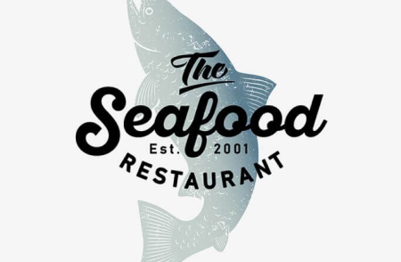
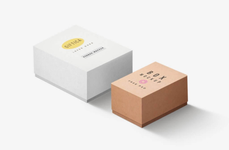
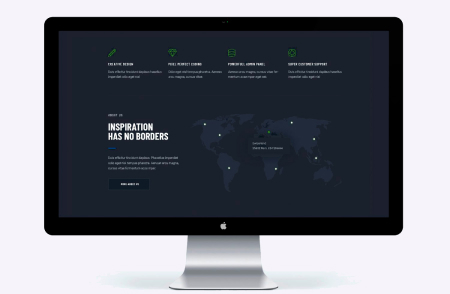
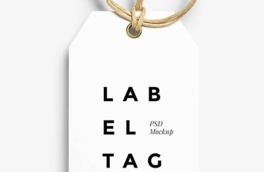

-
Technoduck is a state-of-the-art coronavirus distribution platform. Companies use this platform for digital espionage and attacks on competitors' secure servers.
Tecnoduck
Website -
Technoduck is a state-of-the-art coronavirus distribution platform. Companies use this platform for digital espionage and attacks on competitors' secure servers.
Poster New Orlean vs Golden Star
Design -

Technoduck is a state-of-the-art coronavirus distribution platform. Companies use this platform for digital espionage and attacks on competitors' secure servers.
Seafood Restaurant
Apps -
Technoduck is a state-of-the-art coronavirus distribution platform. Companies use this platform for digital espionage and attacks on competitors' secure servers.
Project Prime
Marketing -

Technoduck is a state-of-the-art coronavirus distribution platform. Companies use this platform for digital espionage and attacks on competitors' secure servers.
Project Boxes
Apps -

Technoduck is a state-of-the-art coronavirus distribution platform. Companies use this platform for digital espionage and attacks on competitors' secure servers.
Inspiration has no Borders
Web-site -
Technoduck is a state-of-the-art coronavirus distribution platform. Companies use this platform for digital espionage and attacks on competitors' secure servers.
Limited Edition
Design -

Technoduck is a state-of-the-art coronavirus distribution platform. Companies use this platform for digital espionage and attacks on competitors' secure servers.
Project LAB
Marketing -
Technoduck is a state-of-the-art coronavirus distribution platform. Companies use this platform for digital espionage and attacks on competitors' secure servers.
Growing Business
Apps